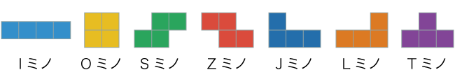
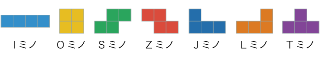

Iミノ（アイミノ）はミノの一種．棒状，アルファベットのIの形をしているミノ．
ワールドルールでは水色と定められている．
ワールドルールが定着する前の日本製テトリスの多くでは赤色だった．

ワールドルールでは水色と定められている．
ワールドルールが定着する前の日本製テトリスの多くでは赤色だった．

アリカは日本のテレビゲーム制作会社．
「テトリス ザ・グランドマスター（TGM）」を制作した．
「テトリス ザ・グランドマスター（TGM）」を制作した．
アレクセイ・ハジトノフはソビエト連邦の科学者．
テトリスを開発した人物の一人．
テトリスを開発した人物の一人．
インフィニティはミノが接地したあとの遊びの間，ミノの回転か移動をすると
遊びの時間がリセットされることを利用してゲームの進行をとめること．
対戦型テトリスでは制限が設けられていることがおおい．
無限回転．
遊びの時間がリセットされることを利用してゲームの進行をとめること．
対戦型テトリスでは制限が設けられていることがおおい．
無限回転．
Lミノ（エルミノ）はミノの一種．アルファベットのLの形をしているミノ．
ワールドルールでは橙色と定められている．
ワールドルールでは橙色と定められている．
Sミノ（エスミノ）はミノの一種．アルファベットのSの形をしているミノ．
ワールドルールでは緑色と定められている．
ワールドルールが定着する前の日本製テトリスの多くでは紫色だった．
ワールドルールでは緑色と定められている．
ワールドルールが定着する前の日本製テトリスの多くでは紫色だった．
Oミノ（オーミノ）はミノの一種．正方形，アルファベットのOの形をしているミノ．
ワールドルールでは黄色と定められている．
ワールドルールでは黄色と定められている．
回転入れ（かいてんいれ）はミノ移動だけでは入れられない地形に回転を利用して入れること．
スーパーローテーションシステムによって確立された．
スーパーローテーションシステムによって確立された．
回転軸（かいてんじく）はミノが回転する際の軸．
ワールドルールでは統一されている．
回転入れや最適化で重要になる．
ワールドルールでは統一されている．
回転入れや最適化で重要になる．
回転法則（かいてんほうそく）はミノが回転する際の法則．
ワールドルールではスーパーローテーションシステムが採用され，直感的な操作が可能となった．
ワールドルールではスーパーローテーションシステムが採用され，直感的な操作が可能となった．
壁蹴り（かべけり）はミノが回転する際に障害物がある場合でも回転できるシステム．
主にスーパーローテーションシステムが採用される前に，それと似たような動きをする仕組みを指す．
主にスーパーローテーションシステムが採用される前に，それと似たような動きをする仕組みを指す．
空T（からティー）とはライン消去を伴わないT-Spinのこと．
T-Spin Zero.
T-Spin Zero.
ゴーストブロックはミノの着地点を影のように表示するシステム．
「テトリス ザ・グランドマスター」で始めて採用された．
オプションで非表示にすることも可能．
ゴースト．
「テトリス ザ・グランドマスター」で始めて採用された．
オプションで非表示にすることも可能．
ゴースト．
コンは1回だけ横移動ボタンを押すこと．
主に最適化において使われる用語．
主に最適化において使われる用語．
コンコンは2回連続で横移動ボタンを押すこと．
主に最適化において使われる用語．
主に最適化において使われる用語．
コンボはライン消去を連続して行うこと．
ライン消去を伴わないミノ接地まで継続される．
REN．
ライン消去を伴わないミノ接地まで継続される．
REN．
最適化（さいてきか）はミノを最も少ない手順で目的の位置へ移動させる手法．
ミノ自体の移動速度が速くても，制御しミスを減らすことができる．
ミノ自体の移動速度が速くても，制御しミスを減らすことができる．
刺さる（ささる）はテトリスにおいて画面が埋まりミノが出せなくなること．
相手の攻撃などによりせり上がり，負けることを意味する．
窒息．
相手の攻撃などによりせり上がり，負けることを意味する．
窒息．
Jミノ（ジェイミノ）はミノの一種．アルファベットのJの形をしているミノ．
ワールドルールでは青色と定められている．
ワールドルールでは青色と定められている．
シングルは1ライン消すこと．
相手に0ライン送ることができる．
相手に0ライン送ることができる．
スーパーローテーションシステムはワールドルールより採用された回転法則．
これにより直感的な操作が可能となった．
スーパーローテーション．SRS．SR．
これにより直感的な操作が可能となった．
スーパーローテーション．SRS．SR．
スプリットはIミノやLJミノを利用して，シングルを同時に2ライン分行うこと．
スプリントはテトリスにおいて，40ラインを消去する時間を競う競技．
せり上がり（せりあがり）はフィールド下部からブロックが現れること．
相手の攻撃や時間経過により起こる．
攻撃によりせり上がった１ラインのうち，１マス空いているマスのことを穴と呼ぶ．
相手の攻撃や時間経過により起こる．
攻撃によりせり上がった１ラインのうち，１マス空いているマスのことを穴と呼ぶ．
Zミノ（ゼットミノ）はミノの一種．アルファベットのZの形をしているミノ．
ワールドルールでは赤色と定められている．
ワールドルールが定着する前の日本製テトリスの多くでは緑色だった．
ワールドルールでは赤色と定められている．
ワールドルールが定着する前の日本製テトリスの多くでは緑色だった．
相殺（そうさい）は相手からきた攻撃に自分の攻撃を合わせることでせり上がりを回避すること．
ソフトドロップは自由落下より速くミノを下ろす操作．
主に回転入れの際に使用する．
主に回転入れの際に使用する．
妥協消し（だきょうけし）はミノを妥協して接地して行うライン消去のこと．
ダブルは2ライン同時に消すこと．
相手に1ライン送ることができる．
相手に1ライン送ることができる．
地形（ちけい）はフィールドに置かれたミノの形状のこと．
ミノ接地にかかわる上部について注目することがおおい．
ミノ接地にかかわる上部について注目することがおおい．
窒息（ちっそく）はテトリスにおいて画面が埋まりミノが出せなくなること．
相手の攻撃などによりせり上がり，負けることを意味する．
刺さる．
相手の攻撃などによりせり上がり，負けることを意味する．
刺さる．
ツモは落ちてくるミノのこと．およびその順番．
T-Spin（ティースピン）はTミノにおける回転入れの総称．
T-Spin-Single（ティースピンシングル）はT-Spinで1ライン消去すること．
T-Spin-Zero（ティースピンゼロ）はライン消去を伴わないT-Spinのこと．
空T．
空T．
T-Spin-Double（ティースピンダブル）はT-Spinで2ライン消去すること．
T-Spin-Triple（ティースピントリプル）はT-Spinで3ライン消去すること．
T-Spin-Mini（ティースピンミニ）はT-Spinで床や壁を利用して1ライン消去すること．
正確には風車回転できないものを指す．
正確には風車回転できないものを指す．
Tミノ（ティーミノ）はミノの一種．アルファベットのTの形をしているミノ．
ワールドルールでは紫色と定められている．
ワールドルールが定着する前の日本製テトリスの多くでは水色だった．
ワールドルールでは紫色と定められている．
ワールドルールが定着する前の日本製テトリスの多くでは水色だった．
テトリスは1985年にアレクセイ・パジトノフに開発され．世界的に大流行した落ち物パズルゲーム．
また，ゲーム内では4ライン同時に消すこと．
相手に4ライン送ることができる．
また，ゲーム内では4ライン同時に消すこと．
相手に4ライン送ることができる．
テトリス ザ・グランドマスターはアリカが制作したゲーム．
それまでテトリスにはなかったシステムが多く存在し，
後にガイドラインとして採用されたシステムもある．
それまでテトリスにはなかったシステムが多く存在し，
後にガイドラインとして採用されたシステムもある．
テトリミノは4つの正方形を組み合わせて作られた7種類のブロックのこと．
テトラミノ．テトロミノ．ミノ．
テトラミノ．テトロミノ．ミノ．
トリプルは3ライン同時に消すこと．
相手に2ライン送ることができる．
相手に2ライン送ることができる．
ネクストは次に落ちてくるミノ．およびそれらを表示する場所．
ハードドロップはミノを一瞬で落とし固定させる操作．
パーフェクトクリアはフィールド内のミノすべて消すこと．
BackToBack（バックトゥーバック）は連続してテトリスやT-Spinを行うこと．
それ以外のライン消去を行うまで係属される．
フィールドは実際に操作を行い，ミノを積み上げていく画面．
プレイ画面のうちネクストやホールドを含まない部分．
プレイ画面のうちネクストやホールドを含まない部分．
ヘンク・ブラウアー・ロジャースはオランダ人のゲームクリエイター．
テトリスカンパニー等の会社を経営．
テトリスカンパニー等の会社を経営．
ホールドはミノを1つキープしておくことができるシステム．
必要なときに入れ替えられるが，一度入れ替えた後はミノを接地するまで使用できない．
必要なときに入れ替えられるが，一度入れ替えた後はミノを接地するまで使用できない．
横溜め（よこだめ）はボタンを押し続けて自動的に動き始めるまでの遅れ.その時間.
DAS.
One-Two（ワン・ツー）はIミノを用いてシングルとダブルを同時に行うこと．
APMはAttack Per Minuteの略．
1分間で相手に送るライン量．
1分間で相手に送るライン量．
AREはミノが接地されてから次のテトリミノが出現するまでの時間．
ARRはAuto Repeat Rateの略．
横移動の速さ.
横移動の速さ.
DASはDelayed Auto Shiftの略．
ボタンを押し続けて自動的に動き始めるまでの遅れ.その時間. 横溜め.
ボタンを押し続けて自動的に動き始めるまでの遅れ.その時間. 横溜め.
IHSはInitial Hold Systemの略．
先行ホールド入力．ミノ出現前にホールド入力を受け付けるシステム．
先行ホールド入力．ミノ出現前にホールド入力を受け付けるシステム．
IRSはInitial Rotation Systemの略．
先行回転入力．ミノ出現前に回転入力を受け付けるシステム．
先行回転入力．ミノ出現前に回転入力を受け付けるシステム．
LPMはLine Per Minuteの略．
一分間に消すラインの量．
一分間に消すラインの量．
20Gは自由落下速度が無限大の状態．
ミノが画面に出現すると同時に接地している状態．
ミノが画面に出現すると同時に接地している状態．